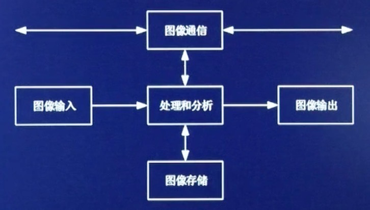
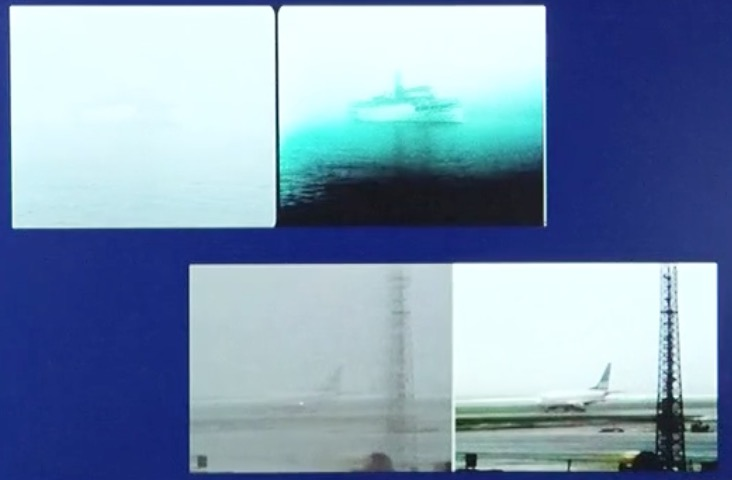
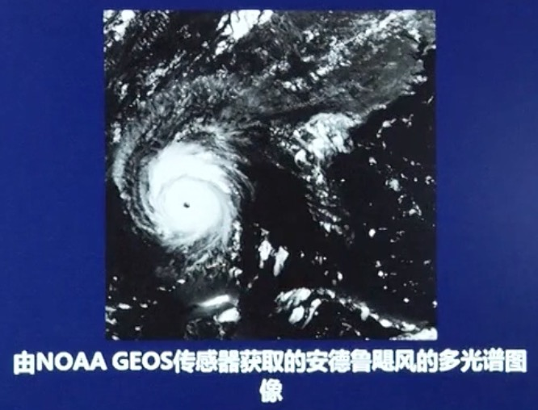

什么是图像
- 图：物体透射或反射光的分布，是客观存在的。
- 像：人对图的印像或认识，是人的感觉。
- 图像：是图和像的有机结合，既反映物体的客观存在，又体现人的心理因素；是客观对象的一种可视化表示，它包含了被描述对象的有关信息。
图像分类
根据图像空间坐标和幅度（亮度或色彩）的连续性可分为模拟（连续）图像和数字图像。
- 模拟图像：空间坐标和幅度都连续变化的图像
- 数字图像：空间坐标和幅度均用离散的数字表示的图像
图像处理
对图像信息进行加工处理和分析，以满足人的视觉和心理需要，或者实际应用的需要。以达到： ①改善人的视觉效果； ②为自动识别打基础； ③压缩编码；
模拟图像处理（光学处理）：光学透视处理、光学照相等。 优点：实时性强、速度快、处理信息量大、分辨率高； 缺点：处理精度低、灵活度差、难有判断功能。
数字图像处理：利用计算机对数字图像进行处理。 优点：精度高、处理内容丰富、方法易变、灵活度高； 缺点：处理速度较慢。
光电结合处理：用光学方法完成运算量巨大的处理（如频谱变换等），用计算机对光学处理结果（如频谱）进行分析判断等处理，该方法是前两种方法的有机结合，它集结了二者的优点。光电结合处理是今后图像处理的发展方向，也是一个值得关注的研究方向。
图像的数学表达式
一幅图像所包含的信息首先表现为光的强度（intensity）,即一幅图像可看成是空间各个坐标点上光强度\(I\)的集合，其普遍数学表达式为： \(I=f(x,y,z,\lambda,t)\) 其中（x,y,z）是空间坐标，\(\lambda\)是波长，\(t\)是时间，\(I\)是光点(x,y,z)的强度（幅度）。
静止图像，与时间\(t\)无关；单色图像（灰度图像），波长\(\lambda\)为一常数；平面图像，则与坐标z无关。即在每一种情况下，图像的表示可省略掉一维。 (1)静止图像：\(I=f(x,y,z,\lambda)\) (2)灰度图像；\(I=f(x,y,z,t)\) (3)平面图像：\(I=f(x,y,\lambda,t)\) 而对于平面上静止的灰度图像，其数学表达式可简化为：\(I=f(x,y)\)
其中，运动图像可用（静止）图像序列表示，彩色图像可分解成三基色图像，三维图像可由二维重建。
图像的特点
- 空间有界：人的视野有限，一幅图像的大小也有限。
- 幅度（强度）有限：即对所有的x,y都有 $ 0 f(x,y) B_m $ 。其中 \(b_m\) 为有限值。
数字图像处理的基本步骤
- 图像信息的获取：采用图像扫描仪等将图像数字化。
- 图像信息的存储：对获取的数字图像，处理过程中的图像信息以及处理结果存储在计算机等数字系统中。
- 计算机数字图像处理：用数字计算机或数字系统对数字图像进行的各种处理。
- 图像信息的传输：要解决的主要问题是传输信道和数据量的矛盾问题。
- 图像信息的输出和显示：用可视化方法进行输出和显示。
数字图像处理的内容和方法
- 图像的数字化：将非数字形式的图像信号通过数字化设备转化成数字图像，包括采样和量化。
- 图像变换：对图像进行变换以便于在频域对图像进行更有效的处理。
- 图像增强：增强图像中的有用信息，削弱干扰和噪声，提高图像的清晰度，突出图像中所感兴趣的部分。比如直方图增强处理。
- 图像复原：对退化的图像进行处理，使处理后的图像尽可能地接近原始（清晰）图像。
- 图像压缩编码：对待处理图像进行压缩编码以减少描述图像的数据量。
- 图像分割：根据选定的特征将图像划分成若干个有意义的部分，这些选定的特征包括图像的边缘、区域等。
- 图像分析与描述：主要是对已经分割的或正在分割的图像各部分的属性及各部分之间的关系进行分析表述。
- 图像识别分类：根据从图像中提取的各目标物的特征，与目标物固有的特征进行匹配，识别，以作出对各目标物类属的判别。
数字图像处理系统的组成
一个基本的数字图像处理系统由图像输入、图像存储、图像通信、图像处理和图像分析五个模块组成。 
- 数字图像输入模块：也称图像采集或图像数字化，是利用图像采集设备（数码相机、数码摄像机等）来获取数字图像，或通过数字化设备（如图像扫描仪）将要处理的连续图像转换成适用于计算机处理的数字图像。
- 数字图像存储模块：用于图像处理和分析的数字图像存储器可分为三类： ①处理和分析过程中使用的快速存储器； ②在线或联机存储器； ③不经常使用的数据库（档案库）存储器。如计算机内存、硬盘、软盘、闪存盘、CD光盘、DVD光盘等。
- 数字图像输出模块：在图像分析、识别和理解中，一般需要将处理前后的图像显示出来，或将处理结果永久保存。前者称为软拷贝或显示，使用设备包括CRT显示器、液晶显示器和投影仪等。后者称为硬拷贝，使用设备包括照相机、激光拷贝和打印机等。
- 数字图像通信模块：对图像数据进行传输和通信。由于图像数据量很大，而能提供通信的信道传输率又有限，因此传输前必须对表示图像信息的数据进行压缩编码，以减少图像数据量。
- 数字图像处理和分析模块：包括处理算法，实现软件和计算机。
（1）通用图像处理：适用于功能要求灵活，图像数据量大，但实时性要求不高的图像处理和分析算法，也可付之于方便灵活的操作界面。 （2）专用图像处理系统：对于CT、核磁共振、彩超、机场安检等专用影像处理，可采用能满足实际应用的专用计算机和专用图像处理算法等，来构成专用图像处理系统。 （3）图像处理芯片：将许多图像处理功能集成在一个很小的芯片上，形成专用或通用的图像处理芯片。
数字图像处理的主要应用
- 宇宙探测应用：主要是星体图片的获取、传送和处理。
- 通信应用：图像信息传输、电视电话、卫星通信、数字电视等。主要是压缩图像数据和动态图像（序列）传送。
- 遥感应用：（航空遥感和卫星遥感）地形、地质、资源的勘测，自然灾害检测、预报和调查，环境检测、调查等。
- 生物医学应用：细胞分析、染色体分类、放射图像处理、血球分类、各种CT、核磁共振图像分析、DNA显示分析、显微图像处理、癌细胞识别、心脏活动的动态分析、超声图像成像、生物进化的图像分析等。
- 军事公安应用：军事目标的侦测和探测、导弹制导、各种侦查图像的判读和识别，雷达、声纳图像处理、指挥自动化系统等。
- 在舰、船、飞机等上，观察系统对感知其周围的态势有着非常重要的作用，观瞄系统一般由CCD摄像机和红外成像系统组成。
- 现场实景照片、指纹、足迹的分析与鉴别，人像、印章、手迹的识别与分析，集装箱内物品的核辐射成像检测，人随身携带物品的X射线检查等。
- 工业生产的应用：将CAD和CAM技术应用于磨具和零件设计和制造、无损探伤、石油气勘测、纺织物的图案设计、流水线零件的自动监测识别、邮件自动分拣和包裹的自动分拣识别等。
- 天气预报：天气云图测绘、传输、气象卫星的处理和识别等。在图中可以看到台风眼。
- 信息安全：信息隐藏于数字水印，指纹识别、虹膜识别和面部识别等。 虹膜识别：虹膜识别是与眼睛有关的生物识别中对人产生较少干扰的技术。它使用相当普通的照相机元件，而且不需要用户与机器发生接触。另外，它有能力实现更高的模版匹配性能。因此，它吸引了各种人的注意。在所有生物识别技术中，虹膜识别是当前应用最为方便和精确的一种。虹膜是由相当复杂的纤维组成的，它的内部结构在出生之前就由随机组合的方式决定下来。虹膜识别技术是把虹膜的可视特征转为512字节的虹膜代码。英国的一个国家实验室（NPL）测试比较了视网膜、虹膜、指纹、掌纹、面部、声音、手书动力学七种技术。虹膜识别比指纹识别准确1200倍，比面部识别准确12019倍，比声音识别准确40000倍。声音识别技术是这七种最低的技术。
- 公共安全：基于图像的智能化分析和综合应用服务是城市公共安全图像监控系统发展的必然趋势。城市人口密集、大型群体活动繁多的现状，对群体的异常行为感知建模并实现异常行为感知，可以极大提高视频监控网络对于群体性事件的防控能力，对城市化公共安全智能化、信息化管理具有重要的现实意义。
知识来源于：西安电子科技大学 现代图像分析视频课程 授课老师： 电子工程学院教授：李洁、高新波；副教授：张建龙、王颖、王秀美、王斌 公众号做知识记录：深度学习视觉 欢迎关注本公众号，获取接下来的课程知识